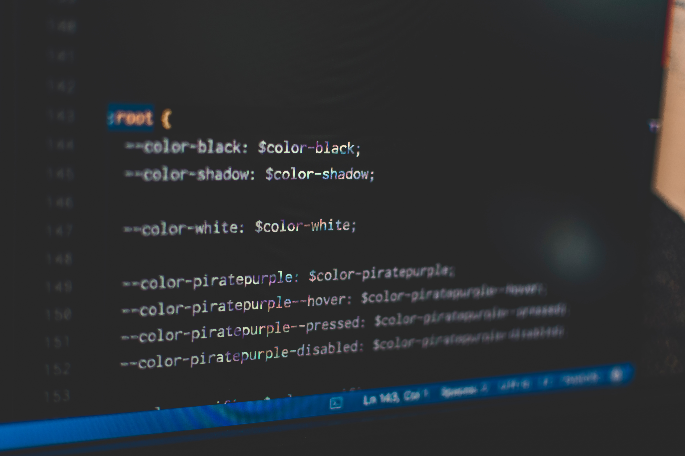

Dec 10th 2021
Variables are the new CSS kings

Why use variables in Cascading Style Sheets? After using the full name
just so we don't forget, let's get straight to the point. The answer
is crystal clear: variables in CSS bring convenience that you'll hold
dear, captivating you with their power to transcend and extend your
styles. Read it more!